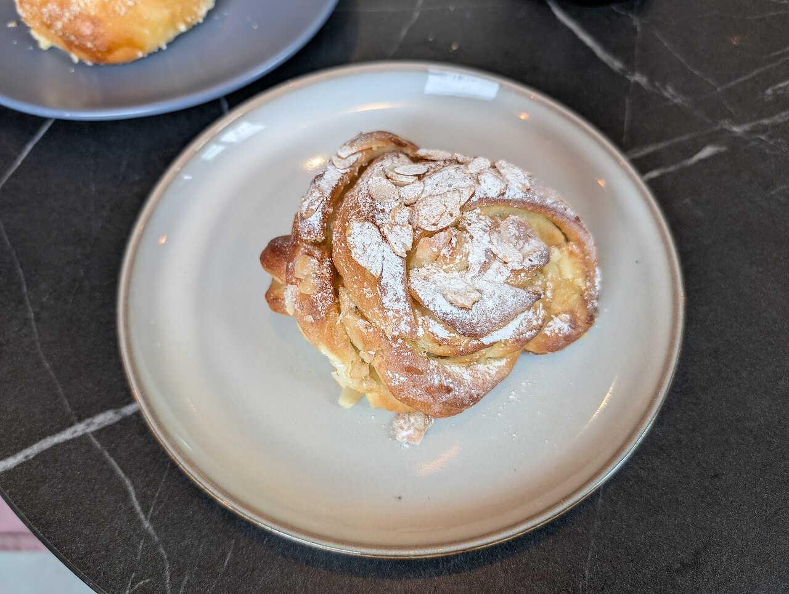
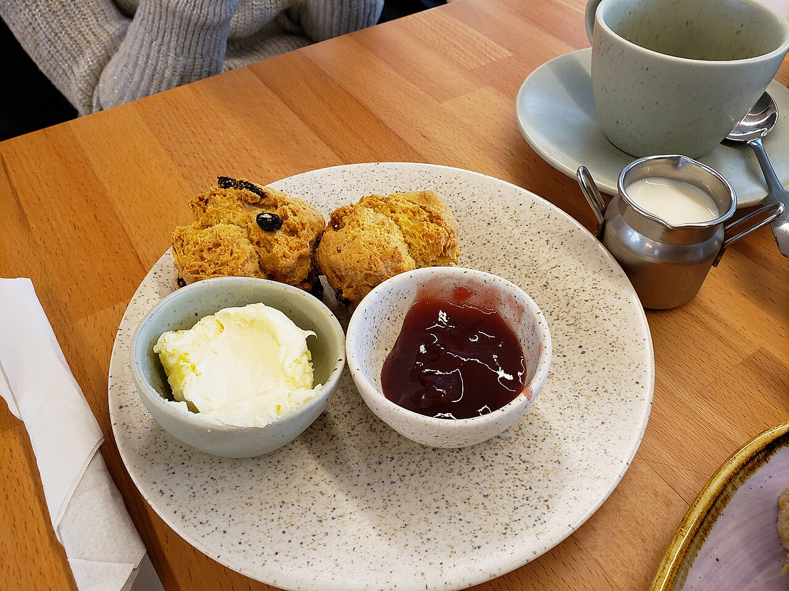
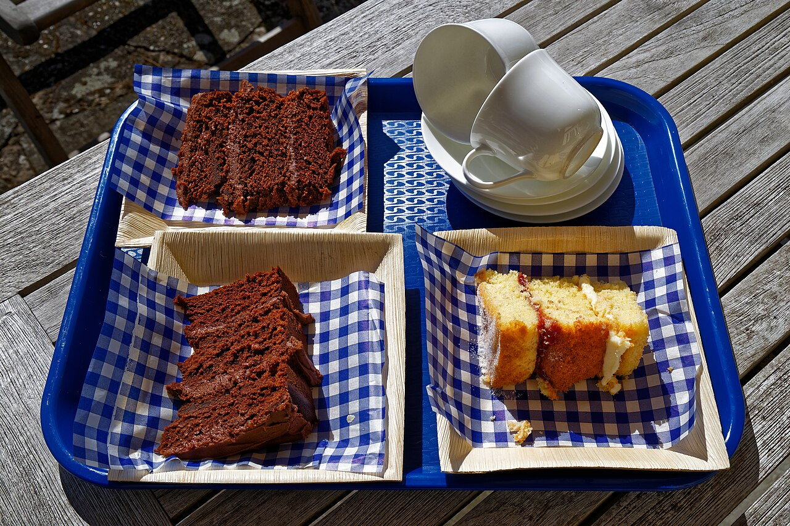

Our craft bakers start work before the sun rises, so every batch is as fresh as possible before it gets to you. The warm smell of baking often escapes onto the street before we've even opened.

We work with local suppliers to source the freshest and most authentic ingredients, and use old-fashioned techniques to ensure the highest quality.


From corporate catering to afternoon tea boxes - including a vegetarian afternoon tea - plus gift vouchers and our reward card for regulars.